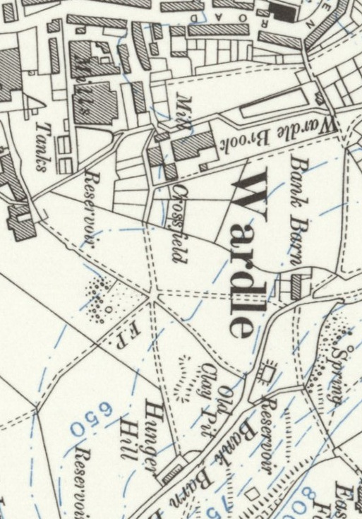

Crossfield House
Crossfield House in Rochdale was long associated with the Holt family and is recorded as the seat of Robert Holt, one of the notable landowners in the district. As with many Lancashire gentry houses of the late 18th and early 19th centuries, Crossfield House combined solid, practical construction with the restrained elegance typical of the region’s prosperous merchant and professional families. Its position and ownership linked it closely to the wider network of Holt properties across Butterworth, Wuerdle, and the surrounding townships, reflecting the family’s established presence and influence in the area.
Crossfield House in Rochdale was one of the town’s notable 19th‑century residences, built during a period when local industrial prosperity was reshaping the landscape. Like many of the substantial homes erected by mill‑owners, merchants, and professional families, the house combined practical Georgian proportions with later Victorian embellishments, reflecting both stability and rising social ambition.
The structure was typically constructed in warm local stone, with a balanced, symmetrical façade facing the road. Tall sash windows, evenly spaced across the front elevation, allowed generous light into the principal rooms. A central doorway—often framed with simple classical detailing—opened into a modest entrance hall that led to the main reception spaces. These rooms were designed for both family life and polite entertaining, with high ceilings, decorative plasterwork, and views across the surrounding fields that once bordered the property.
To the rear of the house, service areas such as the kitchen, scullery, and storerooms were arranged around a smaller courtyard or yard, separated from the formal rooms to maintain the social hierarchy of the period. Upper floors contained bedrooms for the family and, in many cases, attic rooms for live‑in servants. The layout followed the well‑established pattern of middle‑class homes in the expanding textile towns of Lancashire.
Crossfield House stood within its own grounds, which may once have included a walled garden, small orchard, or ornamental planting typical of the era. As Rochdale grew through the 19th century, houses like Crossfield became markers of status—symbols of the success of families whose livelihoods were tied to the mills, warehouses, and commercial enterprises of the town.
Although much of Rochdale’s early domestic architecture has been altered or lost through redevelopment, Crossfield House remains an evocative example of the town’s architectural and social history. Its structure reflects the aspirations of a community shaped by industry, enterprise, and the changing fortunes of Victorian Lancashire. A View of Crossfield House the Seat of Robert Holt Esq.


The map image taken from here